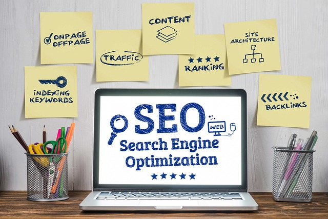

什麼是SEO搜尋引擎最佳化？ SEO（搜尋引擎最佳化）是一種行銷策略，旨在提升網站在搜尋引擎自然排名的表現。
透過優化網站結構、內容品質及外部連結，SEO不僅幫助搜尋引擎更有效地理解您的網站，還能在相關搜尋結果中獲得更高曝光率。
這項行銷策略的目標是吸引更多有需求的用戶進入網站，增加流量與轉換率，而不依賴付費廣告。
如何做好關鍵字行銷？
關鍵字行銷是SEO的核心，並且是網路行銷中最重要的環節之一。
首先，使用工具如Google Keyword Planner進行調研，找出具高搜尋量但競爭適中的關鍵字。
接著，將這些關鍵字自然地融入網站標題、文章內容及元描述中，同時確保內容對用戶有價值且具可讀性，避免過度堆砌。
這樣的行銷策略不僅能提升搜尋排名，還能吸引對應的目標受眾。
專業建議與執行策略，專業建議與執行策略
想要在關鍵字行銷上取得成功，需要持續的努力與精確的數據追蹤。
定期分析網站流量來源，針對表現較弱的頁面調整關鍵字或內容。
同時，創建高品質且定期更新的內容，如部落格文章或FAQ專區，以強化行銷效果並提升用戶參與度。
最後，透過內部連結與外部連結策略，進一步強化網站的信任度與權威性，讓整體行銷策略更加完整，助您在搜尋引擎中脫穎而出！